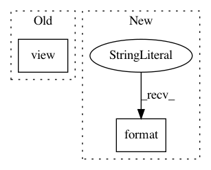

15b3563c3c7f700ee0bf23b0477527dfa5323cea,gpytorch/module.py,Module,initialize,#Module#,46
Before Change
if lower_mask.view(-1).sum():
raise AttributeError("Parameter %s exceeds lower bound" % name)
upper_mask = param.data > upper_bound
if upper_mask.view(-1).sum():
raise AttributeError("Parameter %s exceeds upper bound" % name)
return self
After Change
for name, val in kwargs.items():
if name not in self._parameters:
raise AttributeError("Unknown parameter {p} for {c}".format(p=name, c=self.__class__.__name__))
if torch.is_tensor(val):
self.__getattr__(name).data.copy_(val)
elif isinstance(val, float) or isinstance(val, int):
In pattern: SUPERPATTERN
Frequency: 3
Non-data size: 2
Instances
Project Name: cornellius-gp/gpytorch
Commit Name: 15b3563c3c7f700ee0bf23b0477527dfa5323cea
Time: 2018-06-07
Author: balandat@fb.com
File Name: gpytorch/module.py
Class Name: Module
Method Name: initialize
Project Name: arraiy/torchgeometry
Commit Name: a606a68ff74ed2b2e35f7079a1570310655e4e6d
Time: 2019-03-04
Author: edgar.riba@gmail.com
File Name: torchgeometry/core/depth_warper.py
Class Name: DepthWarper
Method Name: compute_projection_matrix
Project Name: DistrictDataLabs/yellowbrick
Commit Name: 1ef1c68001e5117664acdb2a5156f3991e80cbcf
Time: 2017-03-24
Author: benjamin@bengfort.com
File Name: tests/test_cluster/test_elbow.py
Class Name: KElbowVisualizerTests
Method Name: test_integrated_elbow